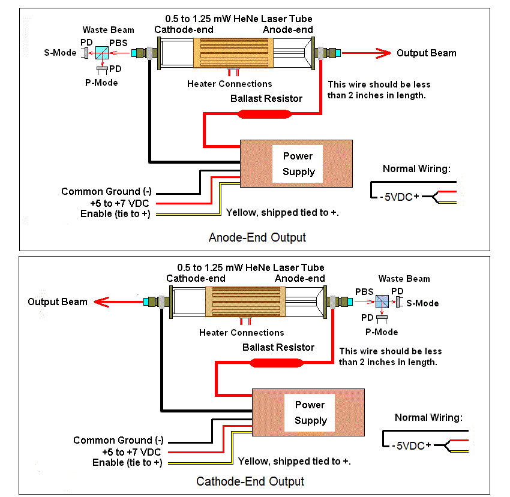

Wiring the power supply
Attach the thin red and yellow wires (tied together) to the positive of the wall adapter. Attach the short black wire to the negative of the wall adapter. DOUBLE CHECK THE WIRING. REVERSE POLARITY WILL BLOW THE HENE LASER POWER SUPPLY OR DAMAGE IT SUCH THAT THERE IS NO OUTPUT CURRENT REGULATION - WHICH WILL DAMAGE THE TUBE. AND MAY BLOW THE WALL ADAPTER AS WELL.
CAUTION: ALL INPUT WIRING MUST BE SECURED USING SOLDER, WIRE NUTS, OR A SUITABLE CONNECTOR. DO NOT JUST WRAP THE WIRES TOGETHER. INTERMITTENT CONNECTIONS BLOW STUFF.
(These are not provided with detachable plugs and jacks for the DC power because of the risk of accidentally swapping them for the heater supply, which would blow the HeNe laser power supply brick.)
Installing the tube
With everything connected, power the wall adapter. The tube should light within a couple seconds. If it does not, go back and double check everything!
WARNING: THE VOLTAGE BETWEEN THE ANODE AND CATHODE OF THE LASER TUBE MAY BE GREATER THAN 5,000 V WHILE STARTING AND GREATER THAN 1,000 V WHEN RUNNING. TOUCHING THIS WILL PROBABLY NOT BE LETHAL BUT YOU WILL FEEL IT AND PERHAPS TOSS THE ENTIRE RIG ACROSS THE ROOM. :( SIGNIFICANT CHARGE WILL REMAIN ACROSS THE TUBE AND POWER SUPPLY FOR SOME TIME AFTER INPUT POWER IS REMOVED. DISCHARGE ACROSS THE TUBE BEFORE TOUCHING ANYTHING TO BE SAFE.